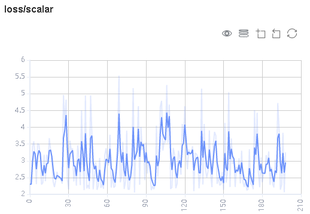
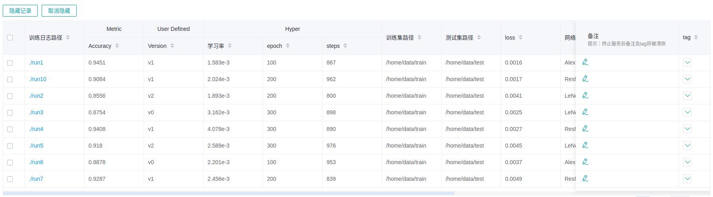
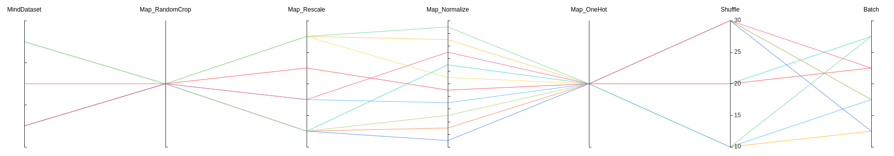
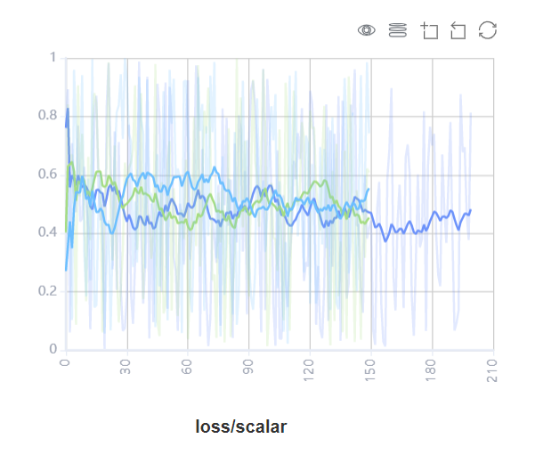

训练过程可视

概述
训练过程中的标量、图像、计算图以及模型超参等信息记录到文件中，通过可视化界面供用户查看。
操作流程
准备训练脚本，并在训练脚本中指定标量、图像、计算图、模型超参等信息记录到summary日志文件，接着运行训练脚本。
启动MindInsight，并通过启动参数指定summary日志文件目录，启动成功后，根据IP和端口访问可视化界面，默认访问地址为
http://127.0.0.1:8080。在训练过程中，有数据写入summary日志文件时，即可在页面中查看可视的数据。
准备训练脚本
Summary数据收集
当前MindSpore利用 Callback 机制将标量、图像、计算图、模型超参等信息保存到summary日志文件中，并通过可视化界面进行展示。
其中标量、图像是通过Summary算子实现记录数据，计算图是在网络编译完成后，通过 SummaryRecord 将其保存到summary日志文件中，
模型参数是通过 TrainLineage 或 EvalLineage 保存到summary日志文件中。
步骤一：在继承 nn.Cell 的衍生类的 construct 函数中调用Summary算子来采集图像或标量数据。
比如，在定义网络时，在网络的 construct 中记录图像数据；在定义损失函数时，在损失函数的 construct中记录损失值。
如果要记录动态学习率，可以在定义优化器时，在优化器的 construct 中记录学习率。
样例代码如下：
from mindspore import context, Tensor, nn
from mindspore.common import dtype as mstype
from mindspore.ops import operations as P
from mindspore.ops import functional as F
from mindspore.nn import Optimizer
class CrossEntropyLoss(nn.Cell):
"""Loss function definition."""
def __init__(self):
super(CrossEntropyLoss, self).__init__()
self.cross_entropy = P.SoftmaxCrossEntropyWithLogits()
self.mean = P.ReduceMean()
self.one_hot = P.OneHot()
self.on_value = Tensor(1.0, mstype.float32)
self.off_value = Tensor(0.0, mstype.float32)
# Init ScalarSummary
self.sm_scalar = P.ScalarSummary()
def construct(self, logits, label):
label = self.one_hot(label, F.shape(logits)[1], self.on_value, self.off_value)
loss = self.cross_entropy(logits, label)[0]
loss = self.mean(loss, (-1,))
# Record loss
self.sm_scalar("loss", loss)
return loss
class MyOptimizer(Optimizer):
"""Optimizer definition."""
def __init__(self, learning_rate, params, ......):
......
# Initialize ScalarSummary
self.sm_scalar = P.ScalarSummary()
self.histogram_summary = P.HistogramSummary()
self.weight_names = [param.name for param in self.parameters]
def construct(self, grads):
......
# Record learning rate here
self.sm_scalar("learning_rate", learning_rate)
# Record weight
self.histogram_summary(self.weight_names[0], self.paramters[0])
# Record gradient
self.histogram_summary(self.weight_names[0] + ".gradient", grads[0])
......
class Net(nn.Cell):
"""Net definition."""
def __init__(self):
super(Net, self).__init__()
......
# Init ImageSummary
self.sm_image = P.ImageSummary()
def construct(self, data):
# Record image by Summary operator
self.sm_image("image", data)
......
return out
步骤二：通过 Callback 的机制，添加所需的Callback实例来指定训练过程中所需要记录的数据。
SummaryStep用于指定记录summary数据的步骤间隔，每隔指定步骤记录一次数据。TrainLineage用于记录模型训练相关的参数信息。EvalLineage用于记录模型测试相关的参数信息。
其中，记录计算图需要在调用 SummaryRecord 时，指定 network 参数，默认不记录。
样例代码如下：
from mindinsight.lineagemgr import TrainLineage, EvalLineage
from mindspore import Model, nn, context
from mindspore.train.callback import SummaryStep
from mindspore.train.summary.summary_record import SummaryRecord
def test_summary():
# Init context env
context.set_context(mode=context.GRAPH_MODE, device_target='Ascend')
# Init hyperparameter
epoch = 2
# Init network and Model
net = Net()
loss_fn = CrossEntropyLoss()
optim = MyOptimizer(learning_rate=0.01, params=network.trainable_params())
model = Model(net, loss_fn=loss_fn, optimizer=optim, metrics=None)
# Init SummaryRecord and specify a folder for storing summary log files
# and specify the graph that needs to be recorded
with SummaryRecord(log_dir='./summary', network=net) as summary_writer:
summary_callback = SummaryStep(summary_writer, flush_step=10)
# Init TrainLineage to record the training information
train_callback = TrainLineage(summary_writer)
# Prepare mindrecord_dataset for training
train_ds = create_mindrecord_dataset_for_training()
model.train(epoch, train_ds, callbacks=[summary_callback, train_callback])
# Init EvalLineage to record the evaluation information
eval_callback = EvalLineage(summary_writer)
# Prepare mindrecord_dataset for testing
eval_ds = create_mindrecord_dataset_for_testing()
model.eval(eval_ds, callbacks=[eval_callback])
可以通过脚本中context的save_graphs选项配置记录算子融合后的计算图。
其中ms_output_after_hwopt.pb为算子融合后的计算图。
目前MindSpore仅支持在Ascend 910 AI处理器上导出算子融合后的计算图。
一个batch中，
HistogramSummary算子的调用次数请尽量控制在10次以下，调用次数越多，性能开销越大。请使用with语句确保
SummaryRecord最后正确关闭，否则可能会导致进程无法退出。
性能数据收集
为了收集神经网络的性能数据，需要在训练脚本中添加MindInsight Profiler接口。首先，在set context之后和初始化网络之前，需要初始化MindInsight Profiler对象；
然后在训练结束后，调用Profiler.analyse()停止性能数据收集并生成性能分析结果。
样例代码如下：
from mindinsight.profiler import Profiler
from mindspore import Model, nn, context
def test_profiler():
# Init context env
context.set_context(mode=context.GRAPH_MODE, device_target='Ascend', device_id=int(os.environ["DEVICE_ID"]))
# Init Profiler
profiler = Profiler(output_path='./data', is_detail=True, is_show_op_path=False, subgraph='all')
# Init hyperparameter
epoch = 2
# Init network and Model
net = Net()
loss_fn = CrossEntropyLoss()
optim = MyOptimizer(learning_rate=0.01, params=network.trainable_params())
model = Model(net, loss_fn=loss_fn, optimizer=optim, metrics=None)
# Prepare mindrecord_dataset for training
train_ds = create_mindrecord_dataset_for_training()
# Model Train
model.train(epoch, train_ds)
# Profiler end
profiler.analyse()
MindInsight相关命令
查看命令帮助信息
mindinsight --help
查看版本信息
mindinsight --version
启动服务
mindinsight start [-h] [--config <CONFIG>] [--workspace <WORKSPACE>]
[--port <PORT>] [--reload-interval <RELOAD_INTERVAL>]
[--summary-base-dir <SUMMARY_BASE_DIR>]
参数含义如下:
-h, --help: 显示启动命令的帮助信息。--config <CONFIG>: 指定配置文件或配置模块，CONFIG为物理文件路径（file:/path/to/config.py）或Python可识别的模块路径（python:path.to.config.module）。--workspace <WORKSPACE>: 指定工作目录路径，WORKSPACE默认为 $HOME/mindinsight。--port <PORT>: 指定Web可视化服务端口，取值范围是1~65535，PORT默认为8080。--reload-interval <RELOAD_INTERVAL>: 指定加载数据的时间间隔（单位：秒），设置为0时表示只加载一次数据，RELOAD_INTERVAL默认为3秒。--summary-base-dir <SUMMARY_BASE_DIR>: 指定加载训练日志数据的根目录路径，MindInsight将遍历此路径下的直属子目录。若某个直属子目录包含日志文件，则该子目录被识别为日志文件目录，若根目录包含日志文件，则根目录被识别为日志文件目录。SUMMARY_BASE_DIR默认为当前目录路径。
服务启动时，命令行参数值将被保存为进程的环境变量，并以
MINDINSIGHT_开头作为标识，如MINDINSIGHT_CONFIG，MINDINSIGHT_WORKSPACE，MINDINSIGHT_PORT等。
停止服务
mindinsight stop [-h] [--port PORT]
参数含义如下:
-h, --help: 显示停止命令的帮助信息。--port <PORT>: 指定Web可视化服务端口，取值范围是1~65535，PORT默认为8080。
查看服务进程信息
MindInsight向用户提供Web服务，可通过以下命令，查看当前运行的Web服务进程。
ps -ef | grep mindinsight
根据服务进程PID，可通过以下命令，查看当前服务进程对应的工作目录WORKSPACE。
lsof -p <PID> | grep access
输出如下，可查看WORKSPACE。
gunicorn <PID> <USER> <FD> <TYPE> <DEVICE> <SIZE/OFF> <NODE> <WORKSPACE>/log/gunicorn/access.log
可视化组件
训练看板
用户从训练列表中选择指定的训练，进入训练看板。
标量可视化
标量可视化用于展示训练过程中，标量的变化趋势情况。

图1：标量趋势图
图1展示了神经网络在训练过程中损失值的变化过程。横坐标是训练步骤，纵坐标是损失值。
图中右上角有几个按钮功能，从左到右功能分别是全屏展示，切换Y轴比例，开启/关闭框选，分步回退和还原图形。
全屏展示即全屏展示该标量曲线，再点击一次即可恢复。
切换Y轴比例是指可以将Y轴坐标进行对数转换。
开启/关闭框选是指可以框选图中部分区域，并放大查看该区域， 可以在已放大的图形上叠加框选。
分步回退是指对同一个区域连续框选并放大查看时，可以逐步撤销操作。
还原图形是指进行了多次框选后，点击此按钮可以将图还原回原始状态。

图2：标量可视化功能区
图2展示的标量可视化的功能区，提供了根据选择不同标签，水平轴的不同维度和平滑度来查看标量信息的功能。
标签：提供了对所有标签进行多项选择的功能，用户可以通过勾选所需的标签，查看对应的标量信息。
水平轴：可以选择“步骤”、“相对时间”、“绝对时间”中的任意一项，来作为标量曲线的水平轴。
平滑度：可以通过调整平滑度，对标量曲线进行平滑处理。
标量合成：可以选中两条标量曲线进行合成并展示在一个图中，以方便对两条曲线进行对比或者查看合成后的图。
图3：Accuracy和Loss的标量合成图
图3展示Accuracy曲线和Loss曲线的标量合成图。标量合成的功能区与标量可视化的功能区相似。其中与标量可视化功能区不一样的地方，在于标签选择时，标量合成功能最多只能同时选择两个标签，将其曲线合成并展示。
参数分布图可视化
参数分布图用于将用户所指定的张量以直方图的形式进行展示。

图4: 直方图展示
图4将用户所记录的张量以直方图的形式进行展示。点击图中右上角，可以将图放大。
图5: 参数分布图功能区
图5展示参数分布图的功能区，包含以下内容:
标签选择：提供了对所有标签进行多项选择的功能，用户可以通过勾选所需的标签，查看对应的直方图。
纵轴：可以选择
步骤、相对时间、绝对时间中的任意一项，来作为直方图纵轴显示的数据。视角：可以选择
正视和俯视中的一种。正视是指从正面的角度查看直方图，此时不同步骤之间的数据会覆盖在一起。俯视是指偏移以45度角俯视直方图区域，这时可以呈现不同步骤之间数据的差异。
计算图可视化
计算图可视化用于展示计算图的图结构，数据流以及控制流的走向，支持展示summary日志文件与通过context的save_graphs参数导出的pb文件。
图6：计算图展示区
图6展示了计算图的网络结构。如图中所展示的，在展示区中，选中其中一个算子（图中圈红算子），可以看到该算子有两个输入和一个输出（实线代表算子的数据流走向）。

图7：计算图功能区
图7展示了计算图可视化的功能区，包含以下内容：
文件选择框: 可以选择查看不同文件的计算图。
搜索框：可以对节点进行搜索，输入节点名称点击回车，即可展示该节点。
缩略图：展示整个网络图结构的缩略图，在查看超大图结构时，方便查看当前浏览的区域。
节点信息：展示选中的节点的基本信息，包括节点的名称、属性、输入节点、输出节点等信息。
图例：展示的是计算图中各个图标的含义。
数据图可视化
数据图可视化用于展示单次模型训练的数据处理和数据增强信息。

图8：数据图功能区
图8展示的数据图功能区包含以下内容：
图例：展示数据溯源图中各个图标的含义。
数据处理流水线：展示训练所使用的数据处理流水线，可以选择图中的单个节点查看详细信息。
节点信息：展示选中的节点的基本信息，包括使用的数据处理和增强算子的名称、参数等。
图像可视化
图像可视化用于展示用户所指定的图片。

图9：图像可视化
图9展示通过滑动图中“步骤”滑条，查看不同步骤的图片。

图10：图像可视化功能区
图10展示图像可视化的功能区，提供了选择查看不同标签，不同亮度和不同对比度来查看图片信息。
标签：提供了对所有标签进行多项选择的功能，用户可以通过勾选所需的标签，查看对应的图片信息。
亮度调整：可以调整所展示的所有图片亮度。
对比度调整：可以调整所展示的所有图片对比度。
模型溯源
模型溯源可视化用于展示所有训练的模型参数信息。

图11：模型参数选择区
图11展示的模型参数选择区，列举了可供查看的模型参数标签。用户可以通过勾选所需的标签，查看相应的模型参数。

图12：模型溯源功能区
图12展示的模型溯源功能区，图像化展示了模型的参数信息。用户可以通过选择列的特定区域，展示区域范围内的模型信息。

图13：模型列表
图13分组展示所有模型信息，用户可以按指定列进行升序或降序展示模型信息。
数据溯源
数据溯源可视化用于展示所有训练的数据处理和数据增强信息。

图14：数据处理和增强算子选择区
图14展示的数据处理和数据增强算子选择区，列举了可供查看的数据处理和增强算子的名称。用户可以通过勾选所需的标签，查看相应的参数等信息。

图15：数据溯源功能区
图15展示的数据溯源功能区，图像化展示了数据处理和数据增强使用的参数信息。用户可以通过选择列的特定区域，展示区域范围内的参数信息。

图16：数据溯源列表
图16展示所有模型训练的数据处理和数据增强信息。
对比看板
对比看板可视用于多个训练之间的标量曲线对比。

图17: 标量对比曲线图
图17展示了多个训练之间的标量曲线对比效果，横坐标是训练步骤，纵坐标是标量值。
图中右上角有几个按钮功能，从左到右功能分别是全屏展示，切换Y轴比例，开启/关闭框选，分步回退和还原图形。
全屏展示即全屏展示该标量曲线，再点击一次即可恢复。
切换Y轴比例是指可以将Y轴坐标进行对数转换。
开启/关闭框选是指可以框选图中部分区域，并放大查看该区域， 可以在已放大的图形上叠加框选。
分步回退是指对同一个区域连续框选并放大查看时，可以逐步撤销操作。
还原图形是指进行了多次框选后，点击此按钮可以将图还原回原始状态。
图18：对比看板可视功能区
图18展示的对比看板可视的功能区，提供了根据选择不同训练或标签，水平轴的不同维度和平滑度来进行标量对比的功能。
训练: 提供了对所有训练进行多项选择的功能，用户可以通过勾选或关键字筛选所需的训练。
标签：提供了对所有标签进行多项选择的功能，用户可以通过勾选所需的标签，查看对应的标量信息。
水平轴：可以选择“步骤”、“相对时间”、“绝对时间”中的任意一项，来作为标量曲线的水平轴。
平滑度：可以通过调整平滑度，对标量曲线进行平滑处理。
性能调试
用户从训练列表中选择指定的训练，进入性能调试。
算子性能分析
使用算子性能分析组件可以对MindSpore运行过程中的各个算子的执行时间进行统计展示。

图19： 算子类别统计分析
图19展示了按算子类别进行统计分析的结果，包含以下内容：
可以选择饼图/柱状图展示各算子类别的时间占比，每个算子类别的执行时间会统计属于该类别的算子执行时间总和；
统计前20个占比时间最长的算子类别，展示其时间所占的百分比以及具体的执行时间（毫秒）。
图20： 算子统计分析
图20展示了算子性能统计表，包含以下内容：
选择全部：按单个算子的统计结果进行排序展示，展示维度包括算子名称、算子类型、算子执行时间、算子全scope名称、算子信息等；默认按算子执行时间排序；
选择分类：按算子类别的统计结果进行排序展示，展示维度包括算子分类名称、算子类别执行时间、执行频次、占总时间的比例等。点击每个算子类别，可以进一步查看该类别下所有单个算子的统计信息；
搜索：在右侧搜索框中输入字符串，支持对算子名称/类别进行模糊搜索。
规格
为了控制列出summary列表的用时，MindInsight最多支持发现999个summary列表条目。
为了控制内存占用，MindInsight对标签（tag）数目和步骤（step）数目进行了限制：
每个训练看板的最大标签数量为300个标签。标量标签、图片标签、计算图标签、参数分布图（直方图）标签的数量总和不得超过300个。特别地，每个训练看板最多有10个计算图标签。当实际标签数量超过这一限制时，将依照MindInsight的处理顺序，保留最近处理的300个标签。
每个训练看板的每个标量标签最多有1000个步骤的数据。当实际步骤的数目超过这一限制时，将对数据进行随机采样，以满足这一限制。
每个训练看板的每个图片标签最多有10个步骤的数据。当实际步骤的数目超过这一限制时，将对数据进行随机采样，以满足这一限制。
每个训练看板的每个参数分布图（直方图）标签最多有50个步骤的数据。当实际步骤的数目超过这一限制时，将对数据进行随机采样，以满足这一限制。
出于性能上的考虑，MindInsight对比看板使用缓存机制加载训练的标量曲线数据，并进行以下限制：
对比看板只支持在缓存中的训练进行比较标量曲线对比。
缓存最多保留最新（按修改时间排列）的15个训练。
用户最多同时对比5个训练的标量曲线。
为了控制性能测试时生成数据的大小，大型网络建议性能调试的step数目限制在10以内。